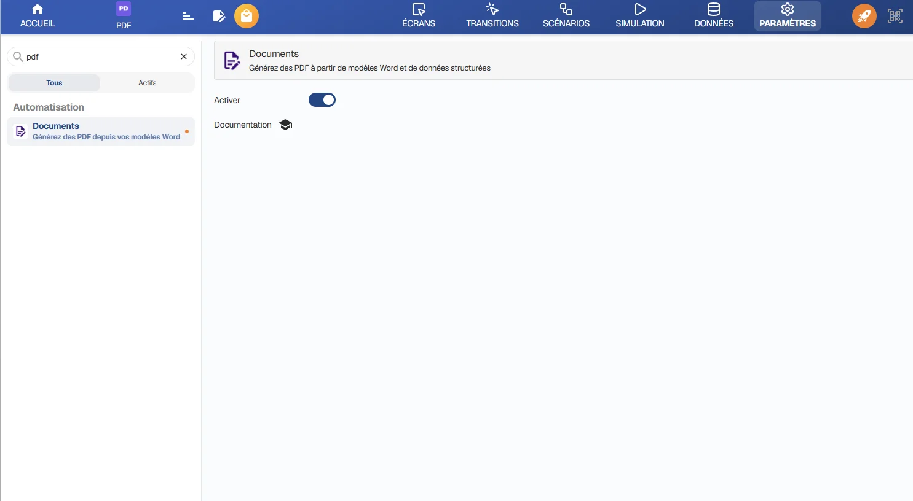
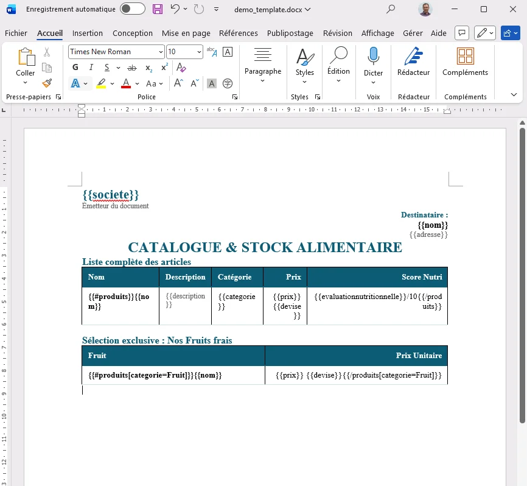
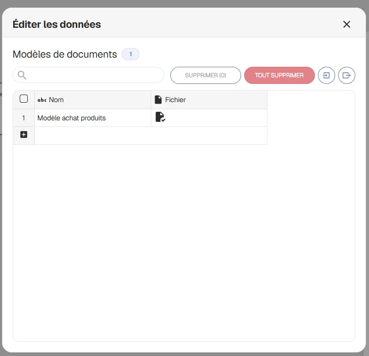
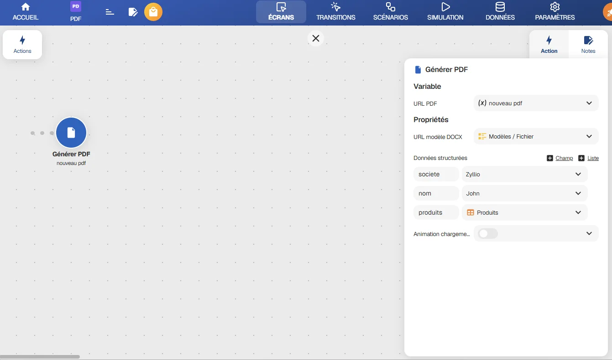
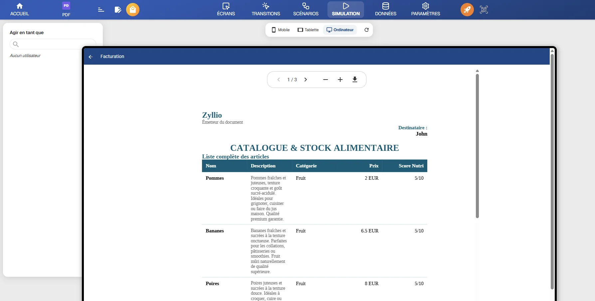

Génération PDF
Générez des documents PDF personnalisés (factures, devis, contrats, attestations) directement depuis votre application Zyllio à l'aide de modèles Microsoft Word.
Disponible à partir du plan Enterprise.
L'intégration Documents de Zyllio vous permet de fusionner de manière dynamique des modèles Microsoft Word (.docx) avec les données de votre application et de les compiler instantanément en fichiers PDF professionnels, sans aucune ligne de code.
1. Activer l'intégration Documents
Avant de pouvoir générer des documents, vous devez activer l'intégration dans les paramètres de votre application :
- Ouvrez votre application dans Zyllio Studio.
- Rendez-vous dans l'onglet Settings (Paramètres) du menu principal.
- Cliquez sur Intégrations.
- Repérez la carte Documents et basculez l'interrupteur sur Enable (Activer).

2. Préparer votre modèle Word (.docx)
Vous pouvez concevoir votre modèle dans Microsoft Word, Google Docs ou LibreOffice. Zyllio utilise un système simple de balises pour insérer les données :
Champs simples
Pour afficher un texte, un montant ou une date (par exemple, le nom du client ou la date de facturation), insérez le nom du champ entre doubles accolades :
Exemple : {{Nom du Client}} ou {{Date}}
Conseil : Zyllio normalise automatiquement les noms des champs. Les espaces, les accents et la casse sont ignorés. Ainsi, {{Nom Client}} et {{nomclient}} feront référence à la même variable.
Tableaux & Listes (Boucles)
Si vous devez afficher une liste d'éléments (comme les lignes d'une facture), vous pouvez créer une boucle. Cela demande à Zyllio de répéter une section ou une ligne de tableau pour chaque élément :
- Débutez la boucle avec :
{{#items}} - Définissez les champs de chaque élément :
{{description}},{{price}} - Terminez la boucle avec :
{{/items}}
Dans un tableau Word : Placez la balise d'ouverture {{#items}} dans la première cellule de la ligne, et la balise de fermeture {{/items}} dans la dernière cellule de cette même ligne. Zyllio dupliquera automatiquement la ligne pour chaque élément.
Filtrer les éléments
Vous pouvez filtrer directement les éléments d'une liste dans votre modèle Word pour n'afficher que certains d'entre eux :
- Afficher uniquement les éléments correspondants :
{{#items[status=Paye]}}affiche uniquement les éléments dont le statut est "Paye". - Exclure les éléments correspondants :
{{#items[status!=Paye]}}masque les éléments dont le statut est "Paye".

3. Importer votre modèle dans une table de données
Le gestionnaire d'Assets de Zyllio étant exclusivement réservé aux images, vous devez stocker vos modèles Microsoft Word (.docx) dans une table de votre base de données :
- Dans la base de données de votre application, créez une table (par exemple, nommée
Modèles). - Ajoutez une colonne de type Fichier à cette table.
- Téléversez votre fichier
.docxdans une ligne de cette table.

4. Configurer l'action "Générer PDF"
Associez maintenant la génération du document à un événement (par exemple, le clic sur un bouton) :
- Sélectionnez le bouton ou l'élément déclencheur sur votre écran.
- Ouvrez ses propriétés d'Actions.
- Ajoutez une étape et choisissez l'action Générer PDF (dans la catégorie Documents).
- Configurez les propriétés de l'action :
- URL modèle DOCX : Liez cette propriété dynamiquement à la colonne Fichier de la table contenant votre modèle (ex:
Modèles.Fichier). Zyllio résoudra automatiquement le chemin vers l'URL absolue du fichier. - Données structurées : Associez les variables de votre modèle Word aux variables de votre écran ou à vos collections de base de données. Ouvrez l'éditeur pour configurer vos données à l'aide de deux boutons dédiés :
- + Champ : Ajoute une valeur simple (texte, nombre, date, etc.). Indiquez la variable de votre document Word comme clé (ex:
nomclient) et liez-la à une variable d'écran ou formule Zyllio. - + Liste : Ajoute un tableau ou une liste. Indiquez le nom de la boucle de votre document Word comme clé (ex:
items) et liez-la à une table de base de données ou collection.
- + Champ : Ajoute une valeur simple (texte, nombre, date, etc.). Indiquez la variable de votre document Word comme clé (ex:
- URL PDF : Sélectionnez ou créez une variable de texte (ex:
FacturePdfUrl) dans laquelle sera enregistrée l'URL du PDF généré. - Animation chargement : Activez cette option (True) pour afficher un indicateur de chargement à l'écran de l'utilisateur pendant la génération du PDF.
- URL modèle DOCX : Liez cette propriété dynamiquement à la colonne Fichier de la table contenant votre modèle (ex:
Détails des options pour les Données structurées
L'éditeur de données vous propose deux types de champs distincts pour alimenter votre document Word :
-
Le bouton + Champ (Valeurs simples) :
Utilisé pour remplacer les balises simples comme
{{nom}}ou{{date}}dans votre document Word. Vous pouvez mapper ces clés à :- Des variables d'écran (ex: saisies de l'utilisateur).
- Des formules dynamiques (ex: calculs de taxes).
- Des informations système (ex: e-mail de l'utilisateur connecté).
- Des textes statiques écrits manuellement.
-
Le bouton + Liste (Tableaux et Boucles) :
Utilisé pour alimenter des structures répétitives comme des tableaux de factures avec des balises de boucles
{{#items}}...{{/items}}. Vous devez lier cette clé à :- Une table de votre base de données (ex: la table
LignesFacture). - Une collection filtrée d'enregistrements. Zyllio générera automatiquement autant de lignes de tableau ou de blocs de texte qu'il y a d'enregistrements correspondants.
- Une table de votre base de données (ex: la table

5. Afficher, télécharger ou stocker le PDF généré
Une fois le PDF généré et son URL enregistrée dans votre variable, vous pouvez l'utiliser de trois manières différentes dans votre application :
A. Afficher le PDF
Pour afficher le document directement dans votre application pour consultation :
- Ajoutez le composant Lecteur PDF sur votre écran.
- Liez sa propriété URL du PDF à la variable contenant l'URL générée (ex:
FacturePdfUrl).
B. Télécharger ou envoyer le PDF
Pour distribuer ou exporter le document :
- Associez la variable contenant l'URL du PDF à un bouton de téléchargement ou d'ouverture de lien dans le navigateur.
- Envoyez-le par e-mail en pièce jointe via l'action d'envoi d'e-mails Zyllio.
- Transmettez l'URL à des plateformes tierces via les actions Zapier ou Make.
C. Stocker le PDF dans la base de données
Pour archiver ou sauvegarder le document généré dans votre historique :
- Ajoutez une action Créer une ligne (Create Row) ou Mettre à jour une ligne (Update Row) après l'étape de génération du PDF.
- Sélectionnez la table cible (ex:
HistoriqueFactures). - Associez la colonne de type Fichier ou URL de cette table à la variable contenant l'URL du PDF généré (ex:
FacturePdfUrl). Le PDF y sera définitivement enregistré.
